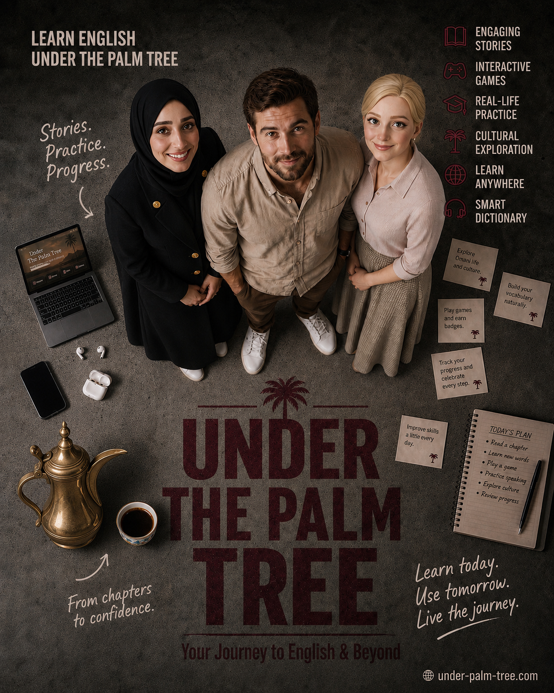

Explore Magazine · اكتشفي المجلة
☰
UNDER THE PALM TREE
Loading articles…
FEATURED
Read Article
Latest Articles
View All
What would you like to do?
Live Chat Bot
Take a Picture of Your Mud House
Retro Restaurants & Cafes
Writers of The Palm
All Articles
Home
Articles
Community
Profile
Home
‹
›
Comments
Close ✕
Send
Comments